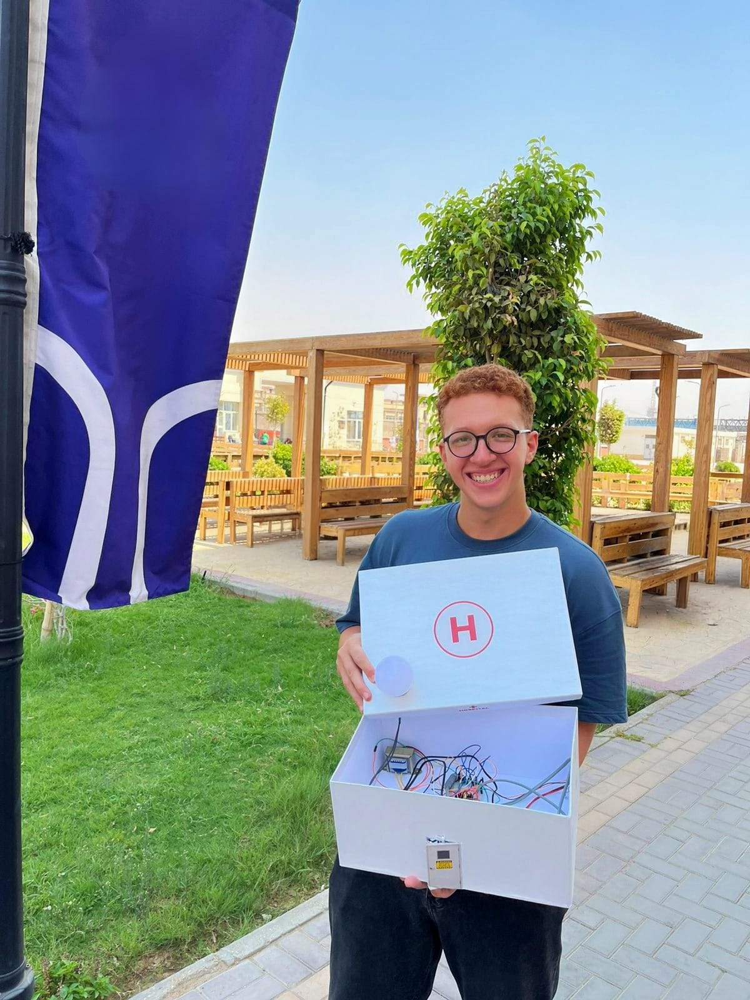
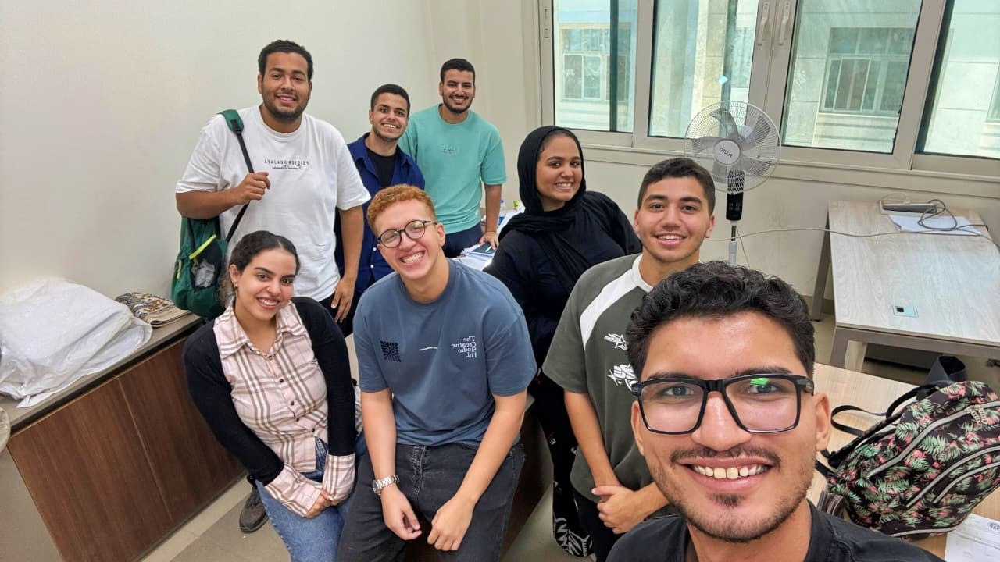
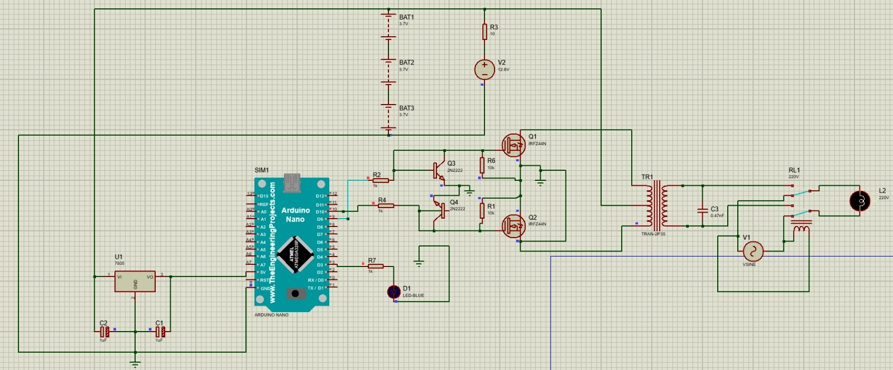
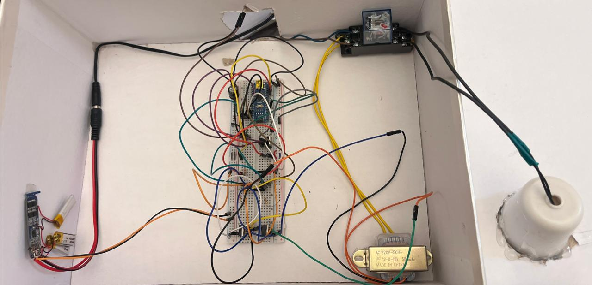
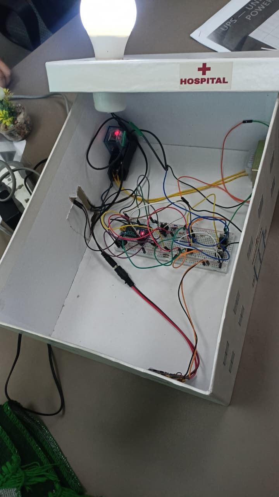

Overview
What the project is and the problem it solves.
This project is a prototype UPS (Uninterruptible Power Supply) system that keeps a load powered when the main supply is interrupted. The goal was simple: maintain power during outages while understanding the principles that make UPS systems reliable in real-world applications.
The core of the project is a custom-built inverter designed and implemented from scratch rather than using a ready-made inverter module. The system converts DC battery power into AC for the load, with an Arduino Nano acting as the control brain and IRFZ44N MOSFETs handling power switching.
The inverter stage uses a transformer for voltage conversion, with 2N2222 transistors driving the switching signal, a relay switching circuit for routing between mains and battery power, and voltage regulation and power management components to keep the output stable.
Highlights & Tools
Key areas covered and the components used.
Technical Highlights
- Custom inverter stage designed and built from scratch
- MOSFET-based switching with IRFZ44N power MOSFETs
- Transformer-based voltage conversion for AC output
- Relay switching between mains and backup power
- Voltage regulation and power management
- Simulation and testing in Proteus before hardware build
Components & Tools
Key Features
What makes the project work.
Design & Build
- Custom inverter designed and implemented instead of a ready-made module.
- MOSFET switching using IRFZ44N power transistors for the inverter stage.
- Transformer-based inverter stage for voltage conversion.
- Relay switching circuit to switch between mains and battery power.
Control & Testing
- Embedded control with an Arduino Nano driving the system.
- Voltage regulation and power management components for stable output.
- Proteus simulation from the start of the design process.
- Hardware assembly and testing after validating the design in simulation.
Gallery
Photos from the project build and simulation.





Project Report
The full project documentation.
Skills Gained
Hands-on experience from the project.
Keep Exploring
Continue through the portfolio.